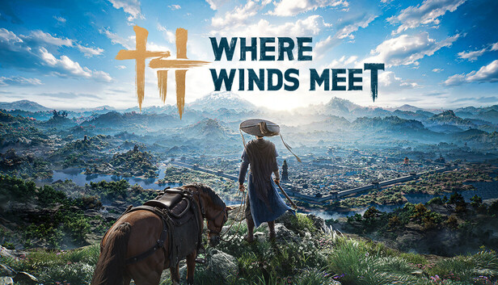

Troubleshooting
How much disk space do I need? Fix Guide
Troubleshooting guide for: How much disk space do I need?.

Quick Answer
Standard package: 100GB SSD recommended. Lite package: 60GB (supports HDD but SSD recommended for better performance)
Recommended Steps
- Standard package: 100GB SSD recommended. Lite package: 60GB (supports HDD but SSD recommended for better performance)
- Retest the game after each change before stacking fixes.
Why This Works
Troubleshooting should isolate one variable at a time. That makes it easier to know whether the problem is install integrity, driver state, network routing, or UI configuration.
Common Mistakes
- Changing many settings before retesting.
- Ignoring official launcher or platform status.
- Deleting local files without backing up screenshots or notes.
Practical Checklist
- Issue reproduced
- One fix applied
- Game relaunched
- Result noted
- Next fix chosen only if needed
Sources And Notes
This guide avoids unverified coordinates or drop rates. Patch-sensitive details should be rechecked after major updates.